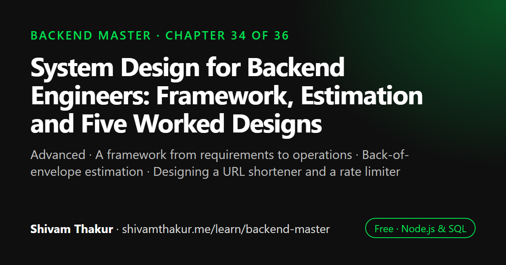

Chapter 34 of 36 · Advanced
System Design for Backend Engineers: Framework, Estimation and Five Worked Designs
System Design — From a Vague Requirement to a Defensible Architecture

System design is combining databases, caches, queues and load balancers to meet requirements with justified trade-offs. This chapter gives a repeatable framework and the numbers to estimate with, then works through a URL shortener, flash-sale checkout, notification service, distributed rate limiter and news feed. It contains no executed examples.
In this chapter you will learn
- A framework from requirements to operations
- Back-of-envelope estimation
- Designing a URL shortener and a rate limiter
- A flash-sale checkout that cannot oversell
- Feed fan-out and presenting trade-offs
34.0 Why This Chapter Matters
You now know the individual tools: databases, caches, queues, load balancers, consistency models, security, observability, deployment. System design is the skill of combining them to answer an open-ended question: "Design a URL shortener / a checkout system / a notification service / a news feed", and to justify every choice with numbers and trade-offs.
It is the core of senior-engineer interviews, but more importantly it is what you do every time a new feature or service is proposed at work. There is no single right answer. A good design is one that:
- Meets the actual requirements (functional and non-functional), not an imagined version.
- Is backed by estimates (how many requests, how much data, how much latency budget).
- Names its trade-offs honestly: what it gives up, and when you'd change it.
- Starts as simple as the requirements allow, then evolves (Chapter 33's "monolith first" applies to every design).
This chapter gives you a repeatable framework, a toolbox of numbers, and five worked designs, each tied back to chapters where you built or measured the underlying pieces.
34.1 A Framework for Any Design (RESHADED-style)
Work through these steps out loud (in an interview) or on a page (at work). Time-box each.
| # | Step | Questions to answer |
|---|---|---|
| 1 | Requirements | Functional: what must it do? Non-functional: scale, latency, availability, consistency, durability, security, cost. What's out of scope? |
| 2 | Estimation | Users, requests/second (average and peak), data per record × records × retention, bandwidth, read:write ratio |
| 3 | API | The key endpoints/events, with request/response shapes and idempotency (Chapter 8) |
| 4 | Data model | Entities, keys, relationships, access patterns → SQL vs document vs KV (Chapters 12–20) |
| 5 | High-level design | Boxes and arrows: clients, load balancer, services, stores, queues, caches |
| 6 | Deep dives | The 2–3 hardest parts: hot spots, consistency, failure handling |
| 7 | Bottlenecks and scaling | Where does it break first at 10×? 100×? What do you do? |
| 8 | Operations | Monitoring, SLOs, alerts, deployment, security, failure modes (Chapters 25–26, 31–32) |
Clarifying questions are half the answer
Never start drawing before you ask. For "design a URL shortener": Who uses it (public/internal)? Custom aliases? Expiry? Analytics? Redirect latency target? Read:write ratio? Availability vs consistency if they conflict? How long are links kept? The assumptions you state become the requirements you're graded against; write them down.
Non-functional requirements checklist
- Scale: DAU, peak RPS, data volume, growth rate.
- Latency: p50/p99 targets per operation (Chapter 25).
- Availability: 99.9% (43 min/month) vs 99.99% (4 min/month): what's the price (Chapter 25's table)?
- Consistency: where must reads be strong (money, stock) and where may they be eventual (counters, feeds)? (Chapter 30)
- Durability: can we lose any data? RPO/RTO (Chapter 32).
- Security/privacy: authn/z, PII, rate limiting, abuse (Chapters 21–23).
- Cost and operational complexity: team size and skills.
34.2 The Numbers to Know (Planning Figures)
Typical orders of magnitude (use these for estimation; real values vary by hardware and cloud):
| Operation | Approx. time |
|---|---|
| L1 cache / CPU register access | ~1 ns |
| Main-memory reference | ~100 ns |
| Compress 1 KB | ~2–10 µs |
| Read 1 MB sequentially from RAM | ~10–50 µs |
| Round trip within a datacenter | ~0.5 ms |
| SSD random read | ~100 µs |
| Read 1 MB sequentially from SSD | ~0.5–1 ms |
| Disk (HDD) seek | ~10 ms |
| Round trip across a continent | ~50–100 ms (speed of light limits) |
Redis GET (same network) |
~0.2–1 ms |
| PostgreSQL indexed lookup | ~0.1–2 ms (cached) |
(Our laptop-in-Docker measurements, such as Redis ≈ 2.5 ms and a PK lookup ≈ 3 ms, are inflated by the Docker-on-Windows network hop; Chapter 27 flagged that.)
Handy conversions:
- 1 day ≈ 86,400 s ≈ 10⁵ s (use 100,000 for quick maths).
- 1 million requests/day ≈ 12 requests/second average (
10⁶ / 10⁵ ≈ 10). Peak is typically 2–10× the average. - 1 billion/day ≈ 12,000 req/s average.
- Storage: 1 KB × 1 million = 1 GB; 1 KB × 1 billion = 1 TB. A year ≈ 3×10⁷ s (≈ 30 million seconds).
- Powers: 2¹⁰ ≈ 10³ (KB), 2²⁰ ≈ 10⁶ (MB), 2³⁰ ≈ 10⁹ (GB), 2⁴⁰ ≈ 10¹² (TB).
- A single well-tuned stateless Node instance: roughly hundreds to a few thousand simple req/s per core (we measured ~46 req/s for a 20 ms CPU-bound handler, i.e., 1 core ÷ 20 ms ≈ 50 req/s: per-request CPU time sets the ceiling).
- A single PostgreSQL primary: thousands to tens of thousands of simple transactions/s on good hardware, if indexed (Chapters 15, 29).
- A single Redis node: ~50k–150k+ simple ops/s.
- Availability math: 99.9% → 43.2 min/30 d; 99.99% → 4.3 min (Chapter 25); dependencies multiply (Chapter 33).
The estimation recipe
- Users → requests:
DAU × actions/day ÷ 86,400 = average RPS; multiply by a peak factor (3–10×). - Reads vs writes: most systems are read-heavy (10:1 to 1000:1); design the read path first.
- Storage:
records/day × bytes/record × retention days × replication factor (3×)(+ indexes ≈ 30–100%). - Bandwidth:
RPS × response size. - Memory for cache: Pareto/Zipf: caching the hottest ~20% of keys often serves ~80%+ of reads (Chapter 27's simulation: 1% of keys served ~50%, 10% served ~73%).
- Sanity-check against the figures above, and say what you'd do if the estimate is 10× off.
34.3 Design 1: A URL Shortener (shopl.in/aB3xY9)
Requirements
- Functional: create a short link for a long URL (optional custom alias, expiry); redirect short → long; basic click counts.
- Non-functional: redirect latency < 50 ms p99; very high availability (a broken link is a broken promise); links never collide; links unguessable enough (not required to be secret); abuse protection.
- Assume: 100 M new links/month, read:write = 100:1, links kept 5 years.
Estimates
- Writes:
100 M / (30 × 86,400) ≈ 40 writes/saverage (peak ~200). - Reads: 100× → ~4,000 redirects/s average, peak ~20,000.
- Storage: record ≈ 500 B (long URL, code, timestamps, owner) →
100 M × 12 months × 5 yr = 6 B links × 500 B = 3 TB(before replication/indexes). Fits a sharded SQL/KV store; a single PostgreSQL node would need partitioning. - Cache: hot links dominate (Zipf): caching the top ~1% of links in Redis serves most redirects; memory for 10 M cached links × 500 B ≈ 5 GB.
API
POST /api/links { url, alias?, expiresAt? } → 201 { code: "aB3xY9", shortUrl } (Idempotency-Key header, Chapter 8)
GET /{code} → 301/302 redirect to the long URL (302 if you need analytics/changes; 301 is cached by browsers)
GET /api/links/{code}/stats → { clicks, ... }The key design question: generating the short code
| Approach | How | Pros | Cons |
|---|---|---|---|
| Hash (MD5/SHA of URL → first 7 chars base62) | Deterministic | No coordination | Collisions (must check/retry); same URL → same code (may or may not be desired) |
| Counter + base62 | Monotonic id (DB sequence / distributed ID generator) → base62-encode | No collisions, short codes | Predictable/enumerable; single counter is a bottleneck (use ranges per app server) |
| Random 7-char base62 | 62⁷ ≈ 3.5 × 10¹² possibilities |
Unguessable, no coordination | Collision check on insert (unique constraint, retry) |
Chosen: random base62 (7 chars) with a unique index and retry on conflict (Chapter 14: let the database's UNIQUE constraint arbitrate; ~6 B links in 3.5 T space ≈ 0.17% occupancy → collisions are rare and retried). For custom aliases, the same unique constraint gives "already taken."
const ALPHABET = '0123456789ABCDEFGHIJKLMNOPQRSTUVWXYZabcdefghijklmnopqrstuvwxyz';
const newCode = (len = 7) => Array.from(crypto.getRandomValues(new Uint8Array(len)), (b) => ALPHABET[b % 62]).join('');
// insert; on unique violation (23505) generate a new code and retry (Chapters 13/14) ← sketch, not run(Modulo bias b % 62 over a byte slightly favours some characters; use rejection sampling for rigour. Not a security boundary here.)
High-level design
client ─► CDN/edge (cache 301s for hot links) ─► LB ─► stateless redirect service ─┬─► Redis (code → url, TTL, negative caching for misses)
└─► DB (source of truth: links table, sharded/partitioned by code)
POST /links ─► API service ─► DB (unique code) ──outbox──► queue ──► click-analytics worker ──► analytics store (columnar, Chapter 20)Deep dives
- Read path: Redis hit ≈ 1 ms; on miss, read the DB and cache with TTL + jitter; negative caching for unknown codes (Chapter 27's penetration defence: 3,000 queries → 30); single-flight on misses. A CDN can cache
301s at the edge for extreme hot links. - Click counting: never update a DB row per redirect (a hot-row bottleneck: Chapter 24's load test). Emit a click event to a queue (async, Chapter 28) and aggregate in batches; counts are eventually consistent.
- Availability: the redirect path depends only on cache + DB read replicas; multi-AZ; if the DB is down, serve from cache; degrade analytics, never redirects (Chapter 26).
- Sharding: partition
linksby hash ofcode(consistent hashing: Chapter 30); the code is always known on the read path, so lookups hit one shard. - Abuse: rate limiting per IP/key (Chapter 19 Lua), URL validation and blocklists (phishing/malware), SSRF-safe previews if you fetch titles (Chapter 23),
X-Content-Type-Options/safe redirects (no open redirect: the target is user-supplied by design, so warn on suspicious domains). - Expiry: a
expires_atcolumn + lazy check on read + a background cleanup; partition by creation month to drop old data (Chapter 20).
Trade-offs to state
301 (cacheable, hides analytics) vs 302 (every click hits you, accurate stats); random codes (unguessable) vs counters (shorter, enumerable); strong vs eventual consistency for click counts (eventual is fine).
34.4 Design 2: ShopLine Checkout at Flash-Sale Scale
Requirements
- Functional: browse, add to cart, checkout (reserve stock, pay, confirm), order history.
- Non-functional: never oversell; never double-charge; a flash sale drives 50× normal traffic on a few products for 10 minutes; checkout p99 < 1 s; 99.95% availability.
- Assume: normal 50 orders/min; flash peak 25,000 requests/s to the product page, 3,000 checkout attempts/s for 500 units of one product.
Estimates and the real constraint
The catalogue page is read-only and cacheable: a CDN absorbs 25,000 req/s easily (Chapter 27). The hard part is 3,000 checkout attempts/s hammering one inventory row: that is a hot row (Chapter 24's load test showed a bigger pool made it slower) and the serial fraction of Amdahl's law (Chapter 29). 500 units sell out in about a fraction of a second at that rate; 99.98% of attempts must be rejected quickly and cheaply.
Design
users ─► CDN (static + product page, SWR) ─► LB ─► API (stateless, autoscaled, pre-scaled)
│
1) cheap gate: Redis atomic counter DECR stock:{sku} (Lua; reject when < 0 → "sold out" in ~1 ms) ← protects the DB
2) admitted requests → create PENDING order + outbox row in ONE Postgres tx (Chapter 28) → 202 Accepted / order id
3) workers (queue): charge payment (idempotency key per order) → confirm → decrement the authoritative stock → emit events
4) expiring reservations: unpaid pending orders release stock after 10 min (job scheduler, Chapter 28)
5) read-your-writes: the order status page reads the PRIMARY (Chapter 29) until confirmed; notifications asyncDeep dives
- Oversell protection is layered. The Redis counter is a fast, approximate gate (it may over-admit slightly or lose state on restart); the authoritative guarantee is PostgreSQL's atomic conditional update
UPDATE stock SET available = available − $q WHERE sku = $s AND available >= $q(Chapter 16: strategy 2, measured: correct and the fastest of six). Never trust the cache for the purchase decision (Chapter 27). - Hot-row mitigation: (a) the Redis gate rejects most traffic before it reaches Postgres; (b) shard the counter across N rows (e.g., 20 buckets of 25 units; pick a random bucket; fall back to others when one is empty); (c) queue-based serialisation: a single worker per SKU applies decrements in order (no row contention at all, at the cost of async confirmation).
- Payment: a saga (Chapter 30): reserve → authorise/charge with an idempotency key (Chapter 26: retries without keys produced 40 extra charges in our simulation) → confirm; on failure compensate (release stock, void). Treat payment-provider timeouts as unknown and reconcile.
- Fairness and abuse: per-user purchase limits, bot protection, rate limiting at the edge and per account (Chapter 23), virtual waiting room (queue users in a CDN/edge worker and admit at a controlled rate).
- Failure modes: Redis down → fall back to Postgres directly with strict rate limiting and a circuit breaker; payment provider slow → timeouts, bulkheads, show "processing"; DB failover → readiness fails, retries with jitter; degrade recommendations and reviews first (Chapter 26).
- Observability: SLOs for checkout success and latency; metrics for admitted/rejected/sold-out, queue age, payment errors, reservation expiries (Chapter 25); a game-day rehearsal before the sale.
Trade-offs to state
Synchronous confirmation (simpler UX, bounded throughput) vs asynchronous (scales, needs "pending" UX); Redis gate (fast, approximate) vs DB-only (exact, slower); strict no-oversell vs allowing slight oversell with backorder (a business decision).
34.5 Design 3: A Notification Service (Email, SMS, Push)
Requirements
- Send transactional (order shipped, password reset) and marketing notifications across channels; respect user preferences and quiet hours; no duplicates; retries; templates; audit trail.
- Assume: 10 M users, 5 M notifications/day average, bursts of 1 M in minutes (a campaign), transactional latency target < 10 s, marketing up to hours.
Estimates
5 M/day ÷ 86,400 ≈ 58/s average; campaign burst 1 M / 600 s ≈ 1,700/s. Provider rate limits (e.g., an email API at 500/s) are the real ceiling → queues and rate limiting are essential.
Design
producers (orders, auth, marketing) ──► Notification API ──validate, dedupe key──► outbox / queue (per channel, per priority)
│
┌───────────────────────────────────────────────────┼─────────────────────────────────────┐
priority: transactional priority: marketing (bulk, rate-limited) scheduled/digest
▼ ▼
workers: preference check → template render → provider call (idempotency key) → status → delivery log
│ └─ retries with backoff+jitter → dead-letter → alerts (Chapter 28)
provider webhooks (delivered/bounced/complained) ──► update status, suppression listDeep dives
- Separate queues by priority (a bulk campaign must never delay a password reset): bulkheads (Chapter 26).
- Idempotency & dedup: each notification has a deterministic key (
order-77:shipped:email); the API rejects duplicates (INSERT … ON CONFLICT DO NOTHING), workers send with the provider's idempotency key, and handlers are idempotent (Chapter 28's duplicate-delivery experiment). - Rate limiting per provider and per user (BullMQ limiter, Chapter 28: measured 10 jobs/s cap) to respect provider limits and avoid spamming a user.
- Preferences and compliance: opt-outs, unsubscribe links, quiet hours (timezones: store IANA zone, compute in UTC, Chapter 13), regional rules (GDPR/CAN-SPAM/TCPA); the suppression list (bounces, complaints) is checked before every send.
- Fan-out for campaigns: don't enqueue 1 M jobs in one request; a campaign job reads recipients in pages and enqueues in batches (backpressure: Chapter 28).
- Delivery tracking: provider webhooks update status (verify signatures, idempotent: Chapter 10); the delivery log is a partitioned table (Chapter 20) with retention.
- Multi-provider failover: if the primary email provider degrades, a circuit breaker routes to a secondary (Chapter 26), accepting differing deliverability.
- Templates and personalisation are data (versioned); rendering is deterministic and escaped (Chapter 23 XSS/injection).
Trade-offs to state
At-least-once with dedup vs at-most-once (a missed password reset vs a duplicate marketing email: choose per type); one pipeline vs per-channel services; build vs buy (SES/SendGrid/Twilio/FCM handle deliverability, which is a hard problem).
34.6 Design 4: A Distributed Rate Limiter
Requirements
Limit each client (API key/user/IP) to N requests per window across many API instances; low overhead (< 1–2 ms added); accurate enough; fail safely when the limiter store is down; informative responses (429, Retry-After, RateLimit-* headers).
Algorithms (Chapter 19 implemented two)
| Algorithm | Behaviour | Memory | Notes |
|---|---|---|---|
| Fixed window counter | INCR key:window |
O(1) | Burst at window edges (up to 2× limit) |
| Sliding window log | Sorted set of timestamps | O(limit) per key | Exact; heavier (we measured it: 5 allowed, 3 refused in 400 ms) |
| Sliding window counter | Weighted blend of current and previous window counts | O(1) | Good accuracy/cost trade |
| Token bucket | Tokens refill at rate r up to burst b | O(1) | Allows bursts; the common production choice |
| Leaky bucket | Fixed outflow rate (a queue) | O(1) | Smooths traffic |
Design
client ─► API instance ─► (middleware) ─► Redis cluster (Lua: atomic token bucket per key, key = apikey:route) ─► allow/deny
│ local in-memory counter as a fast path / fallback when Redis is slow- Atomicity: do the check-and-update in one Lua script (Chapter 19:
INCR+EXPIREas two steps leaves a key that never expires if the process dies in between). - Where the key comes from matters (Chapter 23): the real client IP behind proxies (
trust proxy), API key, user id; limit per route class (login stricter than reads), and per account and per IP. - Sharding: keys hash across Redis nodes (consistent hashing / Redis Cluster slots, Chapter 30); a hot key (one huge tenant) goes to one node: mitigate with local pre-aggregation or per-instance quotas that sync periodically.
- Failure policy: when Redis is unreachable, fail open (allow, with local limits) for general APIs to preserve availability, fail closed for sensitive endpoints (login, payment): a deliberate, documented choice (Chapter 26).
- Latency: one Redis round trip ≈ 0.2–1 ms in production (we measured ~2.5 ms through Docker): acceptable; reduce with local token caches (take N tokens at a time).
- Fairness and abuse: tiered limits (free/paid), burst allowances, global limits to protect dependencies, and observability (rejections per client; Chapter 25).
Trade-offs to state
Accuracy vs cost (sliding log vs counter); central store (consistent, extra hop) vs local limits (fast, approximate: effective limit = limit × instances); fail-open vs fail-closed.
34.7 Design 5: A News/Activity Feed
Requirements
Users follow others and see a reverse-chronological/ranked feed of posts. Assume: 50 M DAU, each opens the feed ~10×/day (5,800 reads/s average, peak ~30k), posts ~1×/day (580 writes/s), avg 200 followees, a few celebrities with 20 M followers; feed load < 300 ms p99.
The core choice: fan-out-on-write vs fan-out-on-read
| Fan-out on write (push) | Fan-out on read (pull) | |
|---|---|---|
| On post | Insert the post id into each follower's feed list (precompute) | Store the post once |
| On read | Read one precomputed list: fast | Query all followees' recent posts and merge: slow |
| Cost | Write amplification: a post by a 20 M-follower celebrity = 20 M writes | Read amplification: 200 queries per feed view |
| Best for | Typical users (few followers) | Celebrities, inactive users |
Hybrid (what real systems do): push for ordinary users, pull for celebrities (their posts are merged into the reader's feed at read time), and skip pushing to inactive users.
Design
post ─► Post service ─► DB (posts, sharded by author) ──outbox──► queue ──► fan-out workers
│ for each follower (batched, rate-limited):
▼ LPUSH/ZADD feed:{userId} (Redis sorted set, score = timestamp/rank, capped at ~800 items)
read feed ─► Feed service ─► Redis feed:{userId} (hot) ─► hydrate post ids from a cache/DB ─► merge celebrity posts ─► rank ─► return page (cursor pagination, Chapter 8)Deep dives
- Storage: feeds are derived data in Redis sorted sets (Chapter 19:
ZADD/ZREVRANGE, rebuildable from the follower graph + posts: the cache is disposable); posts in a sharded DB; media in object storage + CDN (Chapter 20). - Pagination: cursor-based (last seen score/id), never offset (Chapter 15: 543 ms at depth vs 1.2 ms for keyset).
- Ranking: start chronological; add ML ranking later as a separate service reading features; keep the feed API stable.
- Hot users/keys: celebrity posts cached aggressively (CDN/local cache, Chapter 27); fan-out workers rate-limited (backpressure, Chapter 28) so a viral post doesn't flood queues.
- Consistency: eventual: a new post may take seconds to appear; the author sees their own post immediately via read-your-writes (merge their own recent posts locally).
- Deletes and edits: propagate as events; lazy filtering at read time (check post still visible) avoids chasing 20 M copies.
- Cold start: rebuild a feed from the graph on first visit or Redis loss, with a circuit breaker and rate limit (don't stampede the DB: Chapter 27).
Trade-offs to state
Write cost vs read latency (push vs pull); freshness vs cost (hybrid); precomputed lists vs on-the-fly ranking; storage (feed copies) vs compute.
34.8 Patterns That Keep Showing Up
| Problem | Recurring answer | Where we covered it |
|---|---|---|
| Too many reads | Cache (CDN → app → Redis), replicas, SWR | Ch 27, 29 |
| Too many writes to one row/key | Shard the counter, queue/serialise, batch, async aggregation | Ch 16, 24, 28 |
| Slow work in the request | Queue + workers + outbox | Ch 28 |
| Duplicate deliveries | Idempotency keys + idempotent consumers | Ch 16, 26, 28 |
| Unknown outcome of a remote call | Timeouts + keys + reconciliation | Ch 26, 30 |
| Hot key/celebrity | Replicate/split/cache; hybrid push-pull | Ch 27, 34 |
| Spiky load | Autoscale, pre-scale, queue/buffer, rate limit, waiting room | Ch 29 |
| Dependency failure | Breaker, bulkhead, fallback, degrade | Ch 26 |
| Global consistency need | Single-writer/consensus store for the critical piece only | Ch 30 |
| Search/analytics needs | Derived stores fed by events/CDC | Ch 20 |
| Large objects | Object storage + presigned URLs + CDN | Ch 20 |
| Multi-step business transaction | Saga + outbox | Ch 28, 30 |
| Ordering | Partition by key, version checks | Ch 28, 30 |
34.9 How to Present a Design (Interview or Review)
- Restate the problem and list assumptions (write them down).
- Estimate quickly and show you derived the constraint that matters (e.g., "reads dominate: ~4k/s; one hot row is the real bottleneck").
- Start simple: a single-region, single-DB design that satisfies the requirements; then scale step by step, explaining why each component appears (cache because reads dominate; queue because the provider is slow).
- Deep-dive the hardest 2–3 parts rather than skimming everything.
- State trade-offs and alternatives ("I chose X over Y because…; if requirement Z changes, I'd switch").
- Address failure explicitly: what happens when the DB/cache/provider is down, a region fails, or traffic is 10×.
- Cover operations: SLOs, metrics, alerting, deployment, data retention, security/privacy.
- Stay interactive: check in, adapt to the interviewer's hints, and never defend a design against evidence.
Common mistakes
- Jumping to microservices, Kafka and sharding before computing whether one machine suffices.
- Ignoring estimates, or doing them but not using them.
- Hand-waving consistency ("just use a cache") and failure handling.
- A single point of failure drawn as one box (the DB, the queue, the load balancer) with no redundancy story.
- Over-engineering for scale the requirements don't have; or ignoring the stated scale.
- Forgetting security, privacy, cost and operability.
34.10 Edge Cases and Gotchas Checklist
- No clarifying questions; unstated assumptions; scope creep.
- No estimates, or estimates with wrong units (per day vs per second), no peak factor.
- Choosing technology before access patterns; one database for everything or ten for no reason.
- A hot key/row/partition not identified; celebrity/viral skew ignored.
- Strong consistency claimed with caches/replicas in the path; no read-your-writes plan.
- Synchronous calls to slow third parties in the critical path; no queue/outbox.
- No idempotency for retried writes; no deduplication for at-least-once delivery.
- Single points of failure; no multi-AZ story; no degraded modes.
- No monitoring/SLOs/alerts; no deployment and rollback story; no data retention/deletion plan.
- Security/privacy/abuse omitted (rate limits, authz, PII).
- No cost awareness; no evolution path from the simple version.
34.11 Chapter Summary
- System design = requirements → estimates → API → data model → high-level design → deep dives → bottlenecks → operations, with trade-offs stated and failure handled.
- Estimate with planning figures: 1M req/day ≈ 12/s; peak 2–10×; datacenter RTT ~0.5 ms; Redis ~0.2–1 ms; per-request CPU time sets a Node core's ceiling; Zipf means a small cache serves most reads.
- URL shortener: random base62 codes with a unique index, Redis + CDN for reads, async click events, negative caching, consistent-hash sharding; trade-offs 301 vs 302, random vs counter.
- Flash-sale checkout: the hot row is the bottleneck; layered protection (Redis gate → pending order + outbox → queued payment with idempotency keys → atomic conditional stock update), sharded counters or queue serialisation, saga compensation, waiting room, degrade non-critical features.
- Notification service: priority queues (bulkheads), dedup keys, provider rate limits, preferences/suppression, webhooks, DLQ, multi-provider failover.
- Rate limiter: token bucket in an atomic Redis Lua script, key choice, shard/hot-key handling, fail-open vs fail-closed.
- Feed: hybrid fan-out (push for ordinary users, pull for celebrities), Redis sorted-set feeds as disposable derived data, cursor pagination, eventual consistency with read-your-writes for the author.
- Recurring patterns map to earlier chapters. Nothing in this chapter was executed.
34.12 Revision Notes
- Framework: requirements → estimates → API → data → HLD → deep dive → bottlenecks → ops.
- 1M/day ≈ 12 RPS; 1B/day ≈ 12k RPS; peak = 2–10×; 1 day ≈ 10⁵ s.
- Read-heavy → cache/replicas; write-hot → shard/queue/batch; slow third party → queue + outbox.
- Idempotency keys + idempotent consumers; reconcile unknown outcomes.
- Layer protections: edge/CDN → gate (Redis) → authoritative DB (atomic conditional update).
- Rate limit: token bucket + Lua; decide fail-open/closed.
- Feed: hybrid push/pull; cursor pagination; derived data is disposable.
- Always state trade-offs and failure behaviour.
34.13 Mind Map (ASCII)
SYSTEM DESIGN
│
┌────────────┬─────────────┬──────┴───────┬──────────────┬──────────────┐
FRAMEWORK ESTIMATION BUILDING BLOCKS WORKED DESIGNS PRESENTING PATTERNS
│ │ │ │ │ │
reqs/NFRs RPS, peak cache, queue, URL shortener assumptions hot key
API/data storage DB, LB, CDN flash checkout trade-offs idempotency
HLD bandwidth replicas, notifications failure backpressure
deep dive Zipf cache sharding rate limiter ops/security saga/outbox
ops feed evolve degrade34.14 Cheat Sheet
RPS_avg = DAU × actions/day / 86,400 RPS_peak = RPS_avg × (3..10)
storage = records × bytes × retention × replicas(3) × (1.3..2 for indexes)
bandwidth = RPS × response_bytes cache RAM ≈ hot_keys(≈1–20%) × value_size
node_rps ≈ 1000 ms / cpu_ms_per_request (per core) availability: ∏ of dependencies
URL: random base62(7) = 62^7 ≈ 3.5e12 unique index + retry | Feed: push ordinary, pull celebrities
Checkout: CDN → Redis gate → pending order + outbox → queue → payment(idempotency key) → atomic stock UPDATE
Rate limit: token bucket in Lua; key = (client, route); fail-open general / fail-closed sensitive34.15 Key Takeaways
- Clarify, estimate, then design; the numbers tell you which problem is actually hard.
- Start simple and evolve, explaining why each component appears.
- Find the bottleneck (hot key, slow provider, serial section) and design around that.
- State trade-offs and failure behaviour as part of the design, not as an afterthought.
- Reuse the patterns: cache, queue, outbox, idempotency, saga, backpressure, degradation.
- Practise out loud; design is a communication skill as much as a technical one.
34.16 20 Multiple Choice Questions
Tap an answer to check it. Your score updates as you go.
Score: 0 / 0 answered (20 questions)
One million requests per day is about how many requests per second on average?
A sensible peak factor over the average is:
In a read:write = 100:1 system you should design first:
Zipf-distributed access means:
Random 7-character base62 codes give about how many combinations?
The best way to guarantee unique short codes is:
Click counts for a URL shortener should be updated:
In the flash-sale design, the authoritative no-oversell guarantee comes from:
The Redis stock counter in the design is:
A payment timeout should be treated as:
Notification priority queues are an example of:
A token bucket rate limiter allows:
Why do the rate limiter's check and update need one Lua script?
Fail-open for a rate limiter means:
Fan-out on write means:
Why use a hybrid feed approach?
Feed pagination should use:
Feeds in Redis are best viewed as:
A good design answer includes:
A common design mistake is:
Show the answer key
1-b, 2-b, 3-b, 4-b, 5-b, 6-b, 7-b, 8-c, 9-b, 10-c, 11-a, 12-b, 13-b, 14-b, 15-b, 16-a, 17-b, 18-b, 19-b, 20-b
34.17 20 Hands-on Exercises
(Suggestions; none were run by me.)
Easy
- Estimate RPS, storage and bandwidth for a service with 5 M DAU and 20 actions/day each.
- Compute the collision probability for 6 B random 7-char base62 codes (birthday approximation).
- Draw the URL shortener's read path with and without caching; compute latency budgets.
- List the clarifying questions you would ask for "design a chat app".
- Convert 99.95% availability to monthly downtime.
Medium
- Implement the shortener (Express + PostgreSQL + Redis) with a unique index and retry; load-test redirects.
- Add negative caching and measure DB hits for random missing codes.
- Implement a token-bucket rate limiter in Redis Lua and test with concurrent clients.
- Simulate fan-out-on-write vs on-read for a social graph with skewed follower counts; compare costs.
- Design the schema and indexes for the notification service's delivery log and its retention.
- Write the saga for flash-sale checkout with compensations and idempotency keys.
- Design a waiting-room mechanism and describe how it admits users at a controlled rate.
Hard
- Build the flash-sale inventory with a Redis gate + sharded Postgres counters; prove no oversell under 3,000 req/s.
- Implement a hybrid feed (push for ordinary users, pull for celebrities) with Redis sorted sets and measure feed latency.
- Design a multi-region version of the shortener; decide consistency, replication and failover.
- Build the notification pipeline with priority queues, provider rate limits and DLQ; run a campaign burst test.
- Design a global rate limiter that survives a Redis outage; test fail-open/closed behaviour under fault injection.
- Do a full design review of ShopLine at 100× scale using the framework; produce a one-page ADR set.
- Practise three timed 45-minute design interviews with a peer; get feedback on estimation and trade-offs.
- Take a real production incident and redesign the affected component to remove the root cause; document the new failure modes.
34.18 5 Interview Questions
1. Walk me through how you approach a system design problem. Model answer: Clarify requirements and constraints, state assumptions, estimate load and storage to find the dominant constraint, define the API and data model by access patterns, sketch a simple high-level design, deep-dive the hardest parts (hot spots, consistency, failure), identify bottlenecks and scaling steps, and cover operations (monitoring, deployment, security), stating trade-offs throughout.
2. How would you design a URL shortener? Model answer: Generate unique codes (random base62 with a unique index and retry, or counters), store code→URL in a sharded/partitioned store, serve redirects from Redis/CDN with TTL and negative caching, count clicks asynchronously via a queue, rate-limit creation and block abuse, and discuss 301 vs 302, expiry, availability and sharding by code.
3. How do you prevent overselling in a flash sale? Model answer: Layered: edge caching and a waiting room, a fast Redis counter to reject most traffic, then an authoritative atomic conditional update in PostgreSQL (or serialised per-SKU processing), with pending orders, idempotent payments, and compensation on failure; mitigate hot rows via sharded counters; never trust the cache for the final decision.
4. Push vs pull for a news feed? Model answer: Push precomputes followers' feeds at post time (fast reads, heavy writes, bad for celebrities); pull assembles at read time (cheap writes, slow reads). Real systems use a hybrid: push for ordinary users, pull for celebrities, skip inactive users, keep feeds in Redis sorted sets as rebuildable derived data, and paginate with cursors.
5. How do you design a distributed rate limiter? Model answer: A token bucket (or sliding window) kept in Redis with an atomic Lua script, keyed by client and route, with correct client identification behind proxies, local fallbacks, sharding of hot keys, informative 429 responses, and an explicit fail-open/fail-closed policy per endpoint class.
34.19 3 Real Projects
Project 1: Build and Load-Test Three Designs (intermediate, ~20 hours). Implement the URL shortener, the rate limiter and a simplified feed on your stack; for each, produce estimates, an architecture diagram, load tests with percentiles, and a document comparing predicted vs measured numbers and the bottlenecks found.
Project 2: ShopLine Flash-Sale Rehearsal (advanced, ~20 hours). Implement the layered checkout (Redis gate, pending orders/outbox, queue workers, idempotent payments, sharded counters), run a 3,000 req/s simulated sale with fault injection, and verify no oversell, no double charge and SLO adherence; write a post-mortem-style report.
Project 3: Design Portfolio (intermediate, ~15 hours). Write five full design documents (e.g., chat, video upload/transcoding, ride matching, search autocomplete, payment ledger) using the framework: requirements, estimates, APIs, schemas, diagrams, deep dives, failure modes, operations and trade-offs; review them with a mentor.
34.20 Further Reading
- Designing Data-Intensive Applications (Kleppmann): the canonical text for the underlying ideas.
- System Design Interview vols. 1–2 (Alex Xu); Grokking the System Design Interview; the High Scalability blog and company engineering blogs (Netflix, Uber, Stripe, Discord, Slack).
- Jeff Dean, Numbers Everyone Should Know and Designs, Lessons and Advice from Building Large Distributed Systems.
- Google SRE Book (capacity planning, load balancing, handling overload); AWS Well-Architected Framework; Release It! (Nygard).
- Building Microservices and Fundamentals of Software Architecture (Richards & Ford) for trade-off analysis; the C4 model (c4model.com) for diagrams.
- Real designs: Twitter's timeline (fan-out), Instagram's ID generation, Stripe's idempotency write-ups, Figma/Notion scaling posts.
Up next → Chapter 35: Capstone — Build and Operate ShopLine
The final project: bring everything together into one production-grade ShopLine, with a precise specification, milestones, acceptance criteria, a quality bar, a review checklist and runbooks, written in fast mode as a guided build plan rather than tested code.
System Design for Backend Engineers: frequently asked questions
How do I approach a system design problem?
Clarify requirements, estimate load and storage, define the API and data model, sketch a simple design, deep-dive the hardest parts, identify bottlenecks and cover operations, stating trade-offs throughout.
How many requests per second is one million requests a day?
About 12 on average (a day is roughly 100,000 seconds), and peaks are typically 2 to 10 times higher.
How do you prevent overselling in a flash sale?
Layer the protection: edge caching, a fast Redis counter to reject most traffic, then an atomic conditional update in PostgreSQL as the authority, with idempotent payments and compensation.
What is fan-out on write for a feed?
Pushing each new post into every follower's precomputed feed so reads are fast. For celebrities a hybrid pulls their posts at read time to avoid millions of writes.